A segmenti araçlar piyasanın en küçük araçları olarak biliniyor. Daha çok şehir içi kullanım için uygun görülen bu otomobiller, diğer segmentteki araçlara göre daha hesaplı bir seçenek sunuyor. Uzunlukları en fazla 3,7 metre olan A segment arabalar, tam anlamıyla fiyat performans ürünü olarak görülüyor. Boyut olarak küçük olmalarının yanı sıra oldukça hafif araçlardan oluşuyor. A segment araçlar uzun yolculuklar için genellikle pek tercih edilmiyor.
- Fiat 500
- Toyota Aygo 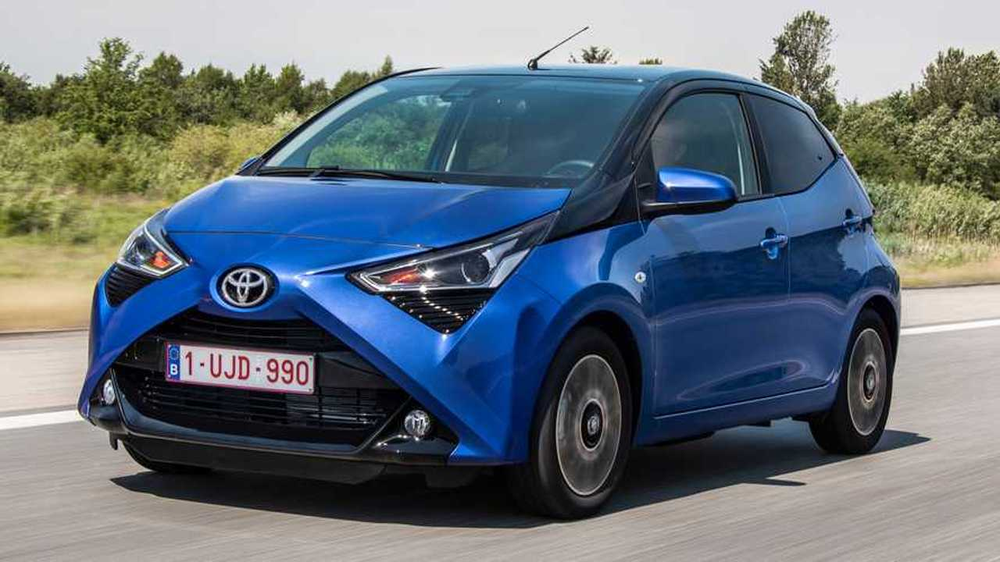
- Hyundai i10
- Citroen C1
B segment arabalar A segment modellerle çeşitli benzerlikler taşıyor. Tıpkı A segment araçlar gibi küçük boyutlara sahip olan B segment arabalar, 3,7 ila 4 metre arası uzunlukta oluyor. B segmentindeki araçlar A segmentine göre hem daha ağır hem de daha yüksek performansa sahip araçlardan oluşuyor. “Küçük aile otomobilleri” olarak da bilinen B segment otomobiller, diğer üst segmentlere göre uygun fiyatlarıyla öne çıkıyor. B segment otomobiller ülkemizde en çok tercih edilen gruplardan birini oluşturuyor.
- Kia Rio
- Seat Ibiza 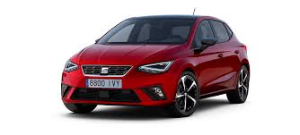
- Skoda Fabia
- Renault Clio 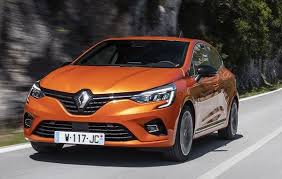
Alt-orta sınıf” veya “kompakt sınıf” olarak tanımlanan C segmenti, Türkiye’de en çok satan otomobil segmenti olarak addediliyor. C segment otomobiller, tıpkı B segment otomobiller gibi küçük ailelere uygun görülüyor. Orta hacimli olmaları sebebiyle C segment otomobiller, kalabalık aileler tarafından da çok tercih ediliyor. C segmentindeki araçlar 4,1 metre ve 4,5 metre arasında uzunluğa sahip oluyor. Araçlar SUV, CUV, sedan ve hatchback gibi pek çok farklı modelde üretiliyor. C segment araçlar uzun yola yatkınlığıyla da öne çıkıyor.
- Audi A3 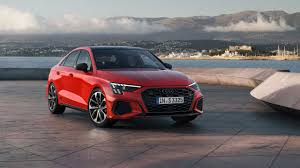
- Kia Cerato
- Hyundai i30
- Honda Civic 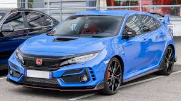
D segment araçlar, “geniş aile araçları ve “üst-orta sınıf araçlar” olarak da biliniyor. Uzunluğu 4,6 ila 4,9 metre arasında olan D segment arabalar, yüksek motor gücüne ve ağır gövdelere sahip. Geniş iç hacimleri dolayısıyla keyifli ve konforlu bir sürüş deneyimi sunan D segment otomobiller, aynı zamanda lüks otomobillerin giriş sınıfı olarak tanımlanıyor. D segmentindeki araçlar ilk üç segmente göre daha yüksek performansıyla öne çıkıyor. Ayrıca ilk üç segmentten daha geniş bir şekilde üretiliyor.
- Volkswagen Passat 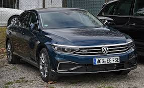
- Renault Talisman 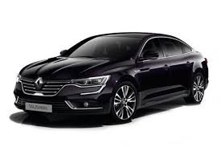
- Peugeot 508
- Opel Insignia 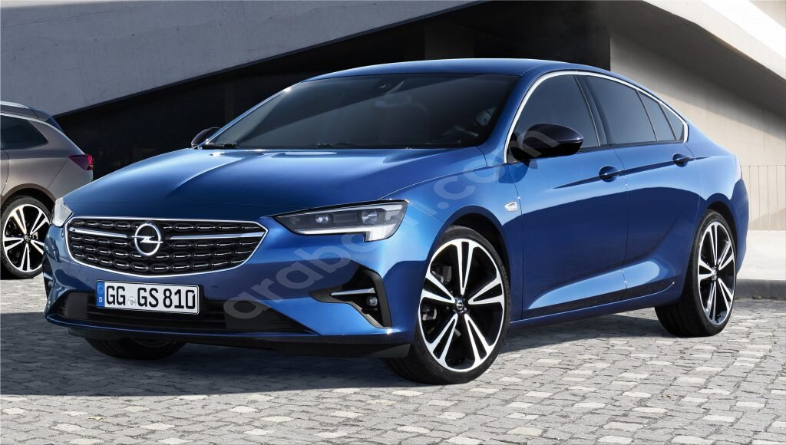
E segment, üst sınıf lüks otomobillerden oluşuyor. Tonaj olarak kaliteli, ağır ve dayanıklı malzemelerden üretilen E segment araçlar, aynı zamanda güçlü iç ve dış tasarımlara sahip oluyor. “Executive car” olarak da bilinen E segment arabalar hem performans hem de fiyat ve yakıt tüketimi bakımından yüksek bir seviyede bulunuyor. E segmentindeki araçların motor silindir hacimleri genellikle 2.0 cc’den başlıyor. Araçların uzunlukları ise 5 metreyi aşıyor.
- Volvo S80 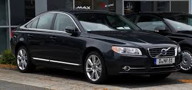
- Volkswagen Amarok 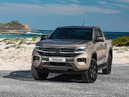
- Mercedes E Serisi
- BMW X6 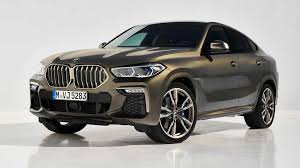
F segment, “lüks otomobil sınıfı” olarak biliniyor. Yeni nesil teknolojiler ve üst düzey kaliteye sahip malzemelerle üretilen F segment araçlar, yüksek fiyatlarla satışa sunuluyor. “Premium large segment” olarak da bilinen F segment, çoğunlukla dört kapılı sedan araçlardan oluşuyor. F segmenti araçlar da tıpkı E segmenti araçlar gibi en az 5 metre uzunluğa sahip oluyor. Geniş iç hacim ve üstün konfor özellikleri ile öne çıkan araçların Türkiye’deki satışı ise diğer segmentlere göre oldukça az.
Diğer segmentlere göre daha yeni bir araç sınıfı olan M segment, farklı koşul ve durumlarda kullanılmaya uygun çok amaçlı araçlardan oluşuyor. Kısaca MPV (Multi Purpose Vehicles – Çok Amaçlı Araçlar) olarak bilinen bu segment, birden fazla segmentin özelliklerini bir arada taşıyor. Minivan ve kargo kamyonetleri gibi işlevsel araçlar MPV sınıfında yer alıyor.
- Volkswagen Caravelle
- Toyota Verso
- Skoda Roomster
- Renault Scenic
J segmenti araçlar hem arazide hem de şehir içinde kullanıma uygun araçlardan oluşuyor. 4×4 SUV (Sport Utility Vehicle – Spor Amaçlı Araç) ve CUV (Crossover Utility Vehicle – Arazi Aracı) araçlar, J segment araç sınıfına dahil ediliyor. Yüksek performans, üstün konfor ve işlevsellik J segmenti araçların belli başlı özellikleri arasında bulunuyor. J segment arabalar, özellikle güçlü tasarımlarıyla dikkat çekiyor.
- Volkswagen Tiguan 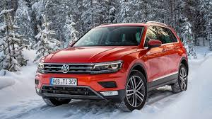
- Skoda Kodiaq 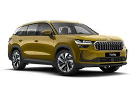
- Renault Koleos 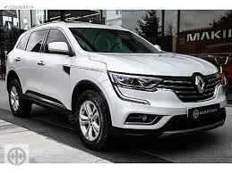
- Peugeot 5008 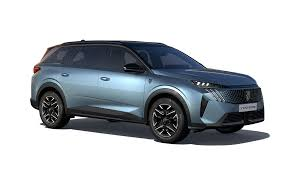
İki kapılı ve iki ön koltuklu; yüksek beygir gücüne sahip, üstün manevra ve yol tutuş kabiliyetleri olan spor araçlardır. Yüksek performans bu araç sınıfının en belirgin özelliğidir.
- Toyota GT86
- Subaru BRZ 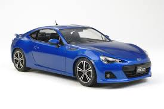
- Porsche 718 Cayman 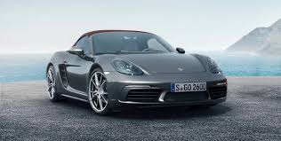
- Nissan 370Z 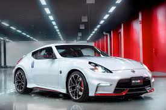